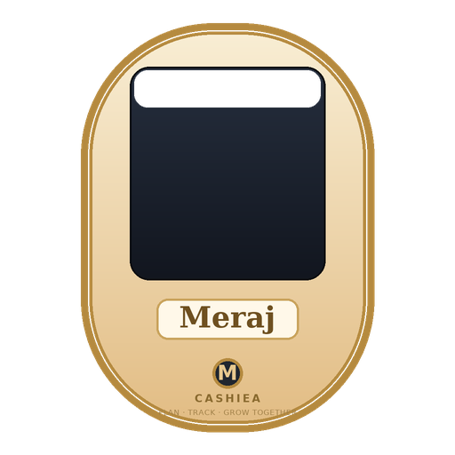
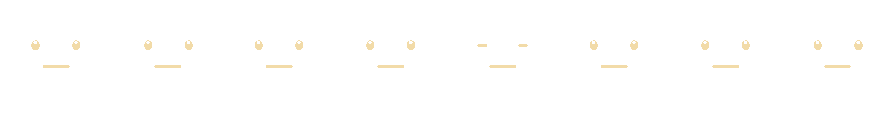
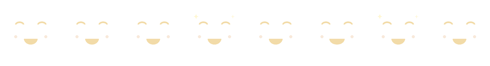
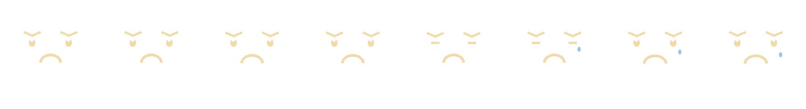
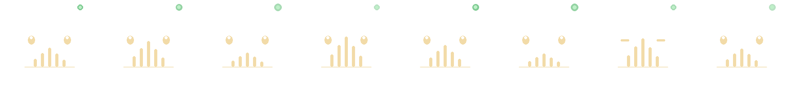
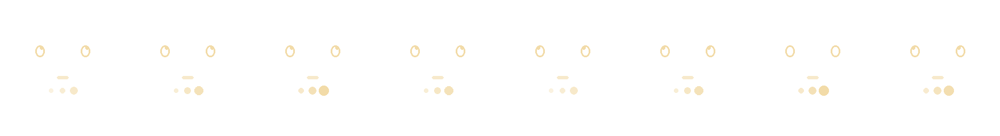
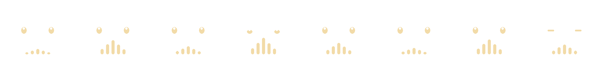

He floats, blinks, smiles, thinks and answers — this is the exact engine the app runs.







One static cream/gold body with the "Meraj" panel, "M" speaker and Cashiea branding — the animated face sheet plays on top, so swapping states looks like one continuous living device, never different characters. Active states (listening / thinking / speaking) speed up the float for an attentive feel.